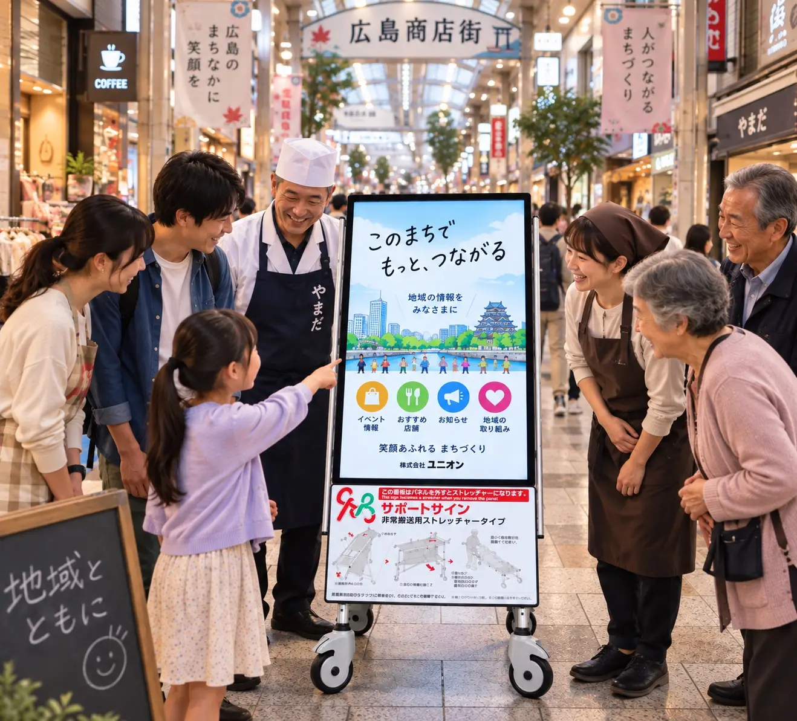
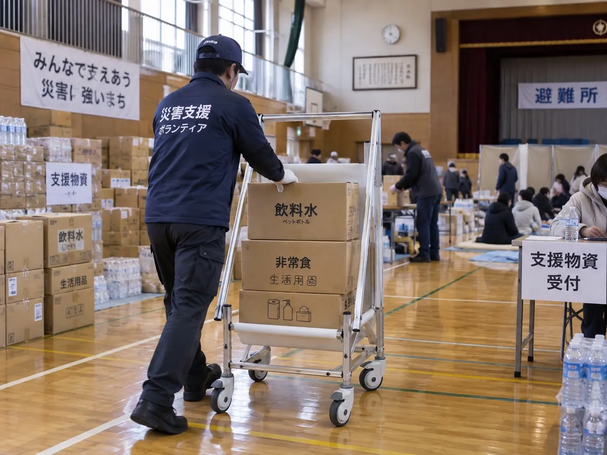
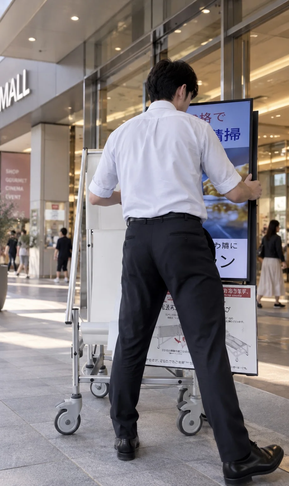
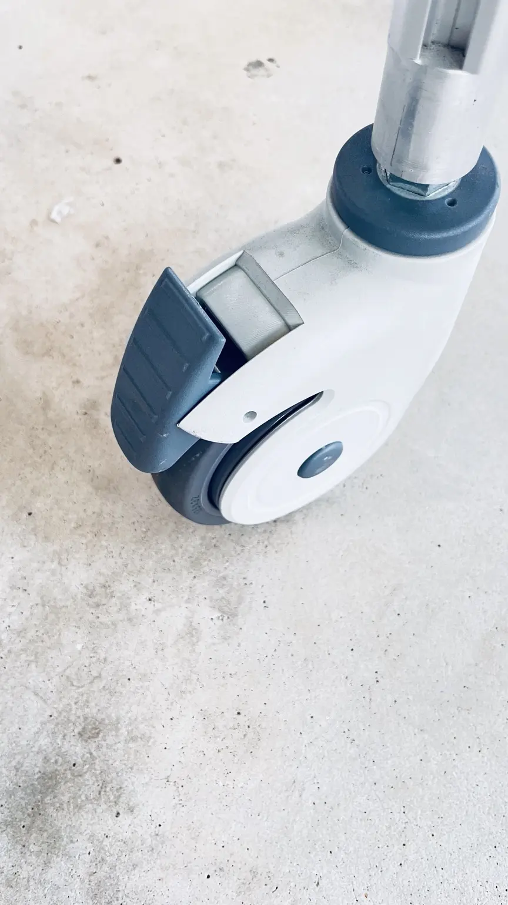
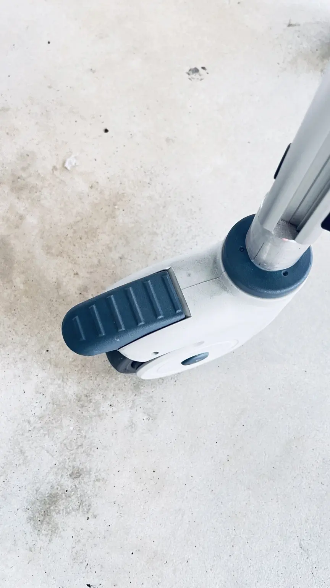
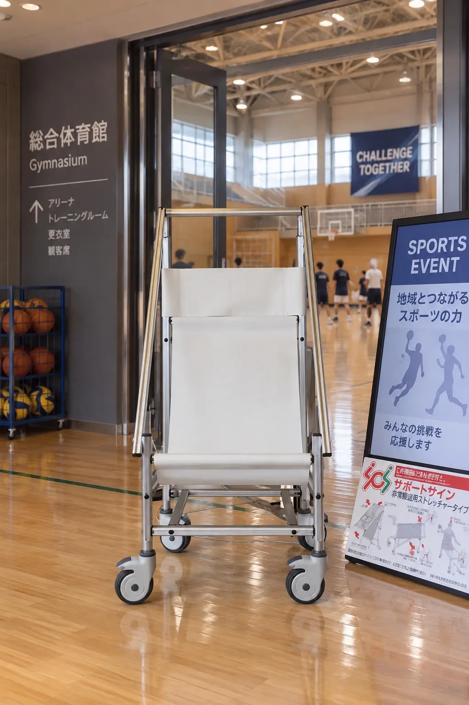
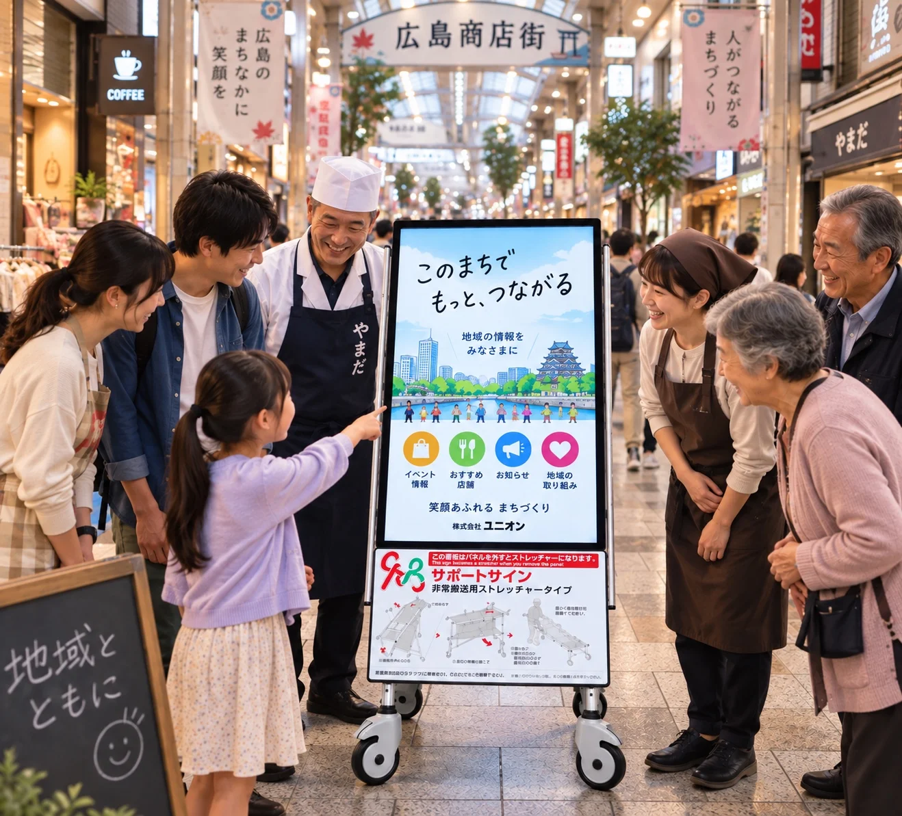

情報を届ける
施設案内、安全啓発、イベント情報、企業PRなどを動画や画像で発信します。
PRODUCT / DIGITAL SIGNAGE SUPPORT SIGN
日常の情報発信と緊急時の搬送補助。
二つの役割を、一台に。

デジタルサイネージサポートサインは、普段は施設案内やお知らせを届ける電子看板として使用し、緊急時にはディスプレイ部分を取り外して搬送用具として活用できる製品です。
施設案内、安全啓発、イベント情報、企業PRなどを動画や画像で発信します。

製品タイプに応じた搬送用具へ。体調不良者の移動や物資運搬などを補助します。
ディスプレイを取り外し、足元のストッパーを解除。いざという時に、すばやく車椅子として活用できます。




人が行き交う場所で毎日使う備えへ。施設に必要な情報を発信しながら、安全への取り組みも自然に伝えられます。

体調不良者などを安全な場所へ移動する際の補助に。
施設内の救護・避難活動を支える搬送用具として。
避難所や支援拠点で、人だけでなく物を運ぶ用途にも。
製品写真の撮影後、各部の特徴を写真に重ねて自然にご紹介します。
寸法・重量・耐荷重などは、掲載数値を最終確認後に追加します。
TALK WITH UNION
設置場所、ディスプレイ、運用方法、費用感。検討前でもお気軽にご質問ください。